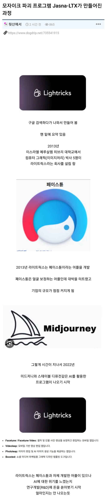
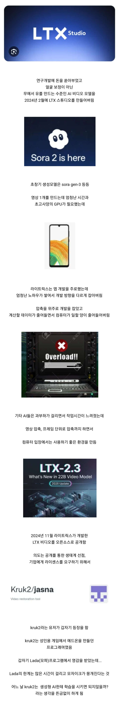
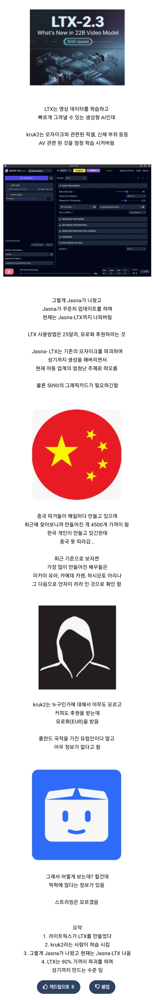

64 · 1 · 10 시간 전 · 원문



수집 당시 댓글 3개
구울요리 · 2 일 전
pikpak ltx 로 구글링 해주면 자세히 알려주네 ㅋㅋㅋ
d개r드i리p퍼 · 2 일 전
ㅇㄷ
카레맛녹차 · 23 시간 전
가짜ㅂㅈ니 진짜ㅂㅈ니 하는 찐따들 왜케 븅같냐ㅋㅋ
어차피 다 픽셀로 이루어진건데 그게 진짜든 가짜든 뭔 상관이야 고화질 ㅂㅈ보면서 한번 잘 쌌으면 됐지
pikpak ltx 로 구글링 해주면 자세히 알려주네 ㅋㅋㅋ